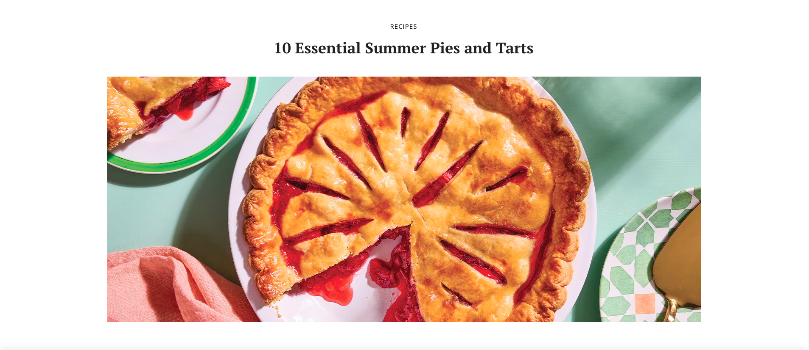
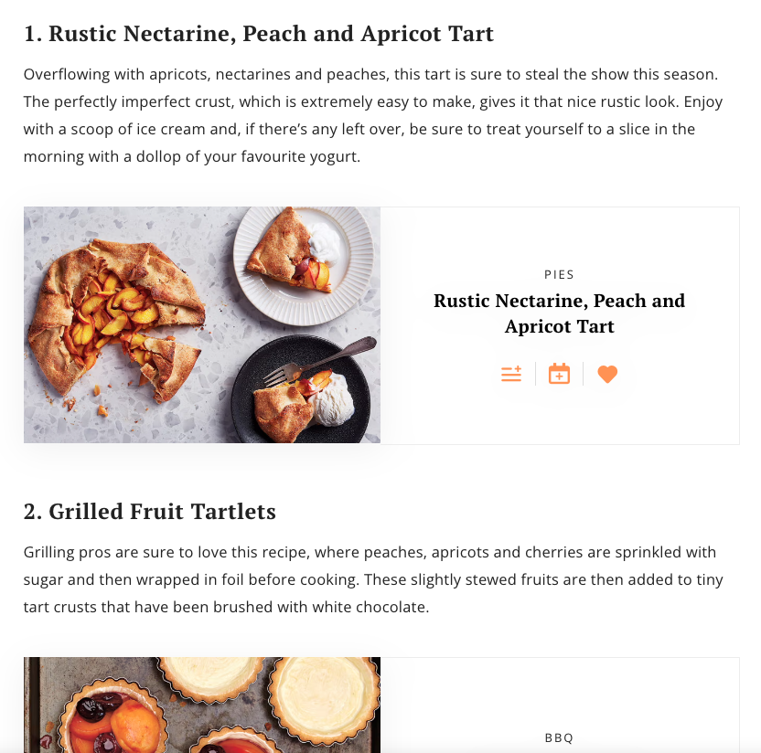

My name is Dickson Lee. I am a Web Developer with 2 years of experience in Front-end and 3 years as a Web Integrator. I am hobbyist photographer. I made this web page, with some inspiration, as a detailed journey in hope that you will find it interesting and engaging.
Tech Stack
Portfolio: (Work experience, personal and inspired pieces)
1) RICARDO CUISINE: work experience
While working at Turbulent, a digital media company, I had the opportunity to work with Ricardo Cuisine's graphic designers despite them being very particular, exigent and constantly aiming for pixel-perfect. This is when I was first exposed into the world of graphic and web design. One of my task and joy was to build and translate the mockup's design into a viewable web page. The following pictures is a sample of my work.
https://www.ricardocuisine.com/en/articles/recipes/748-10-essential-summer-pies-and-tarts


Although, some new features were added since then. I had to make sure that the line height of the text are
true to pixel value that was in the mockup. The symmetry of the text like how the words "Rustic Nectarine,
Peach And Apricot Tart" is visually appealing since there isn't a single word on a single line.
2) PLUSGRADE: work experience
Plusgrade is a company that specializes in ancillary revenue in the travel business. For example, when you
booked a ticket at an airline, the airline might send you an email asking whether you want to upgrade your
seat level to a higher one (economy -> business). My role at Plusgrade was to help integrate new partners
into
our emails system, update pricing on certain routes and more importantly, help and consults clients
about any customisation in their email template. Usually, the client provide us the necessary information
but
it can be challenging because using CSS in email is not the same in web browser. It has not evolve at the
samne rate. Here is a sample email whom I had opportunity to work on.


3) PPG INDUSTRIES: work experience
My latest work experience, pride and joy was at PPG Industries, a leading global company in the
manufacturing
of paint. My task was to revamp their main website (https://www.ppg.com/en-US) amd other sister websites
base
on mockup provided by the graphic designers. Anything in between the navigation bar to the footer, I had my
hands on it. I added animation whenever a user is scrolling down the page, mouse hover effect on cards,
dropdown menu, accordion that show their content or not etc. I truly felt value for my contribution when I
was
working with them unlike the first time at Ricardo Cuisine which added fuel to my curiosity about web design
in general.

4) Project-Obsolete: inspired piece
We have seen many websites that animates while scrolling. But this website from the anime Obsolete made by Youtube is one that caught my attention. If you click on the "on" at the bottom left of the screen in desktop view, the website become interactive and becomes an interface UI where you are piloting a mech and you are shooting bullets on each mouse left-click while wearing a visor kinda like video game with Apple Vision Pro. I am big fan of Gundam, a animated Japanese military science fiction media franchise where giant robot or mechs is controlled by an ace pilot.

5) Photography: personal piece
As mentioned above, I am a hobbyist photographer. The first time I really held a camera was during my
undergrad studies in Urban Studies at Concordia University. I had to take pictures of various buildings,
described and understand its architectural design and its significance within the timeframe and how it might
or not
persevere throughout the time. Rather than using a camera phone producing low quality pictures, I decided to
buy a Fujifilm x100. Yes, the same camera line that TikTok made popular and scalpers are into it. Alas, I
digress. So from there own, I decided to photography more seriously and understand the inner works such as
composition, f-stop and know when to under or over expose a shot. Here are some of my creation:
I was really inspired by Julia aka naturey_moments in Instagram. The picture that I took was edited in Lightroom. My goal was to somehow achieve Wes Anderson's signature pastel vibrance in his works such as the movie Budapest.


This one is also inspired by Julia but rather than achieving the pastel look. I wanted to maintain as much details in the petals but also make the color pop as much as possible.